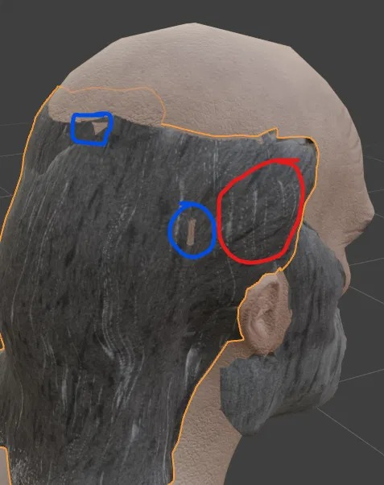
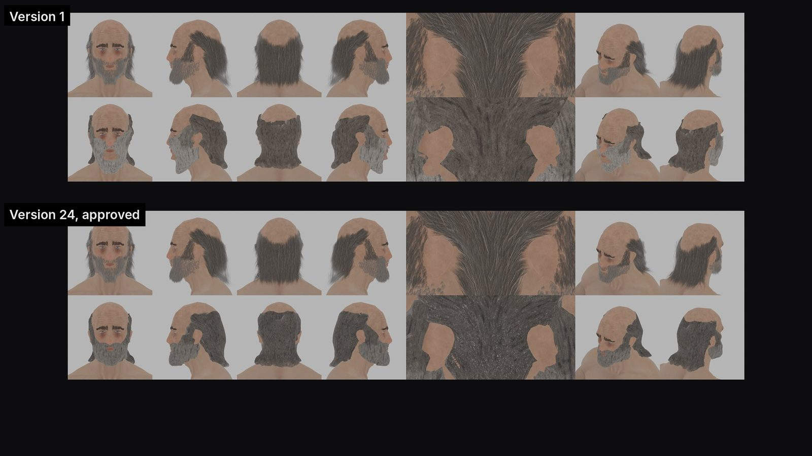
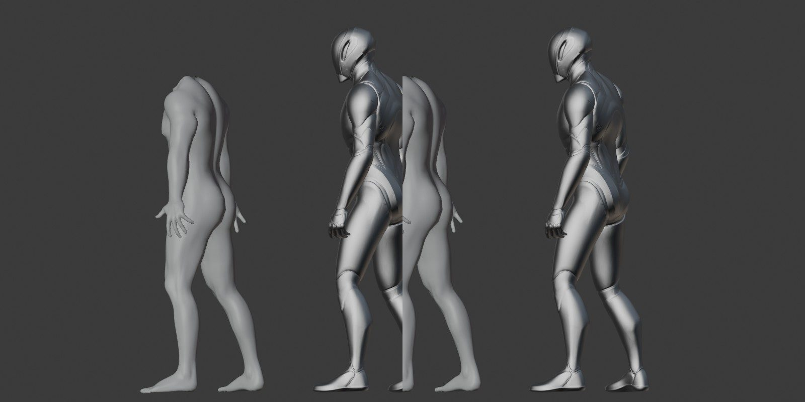
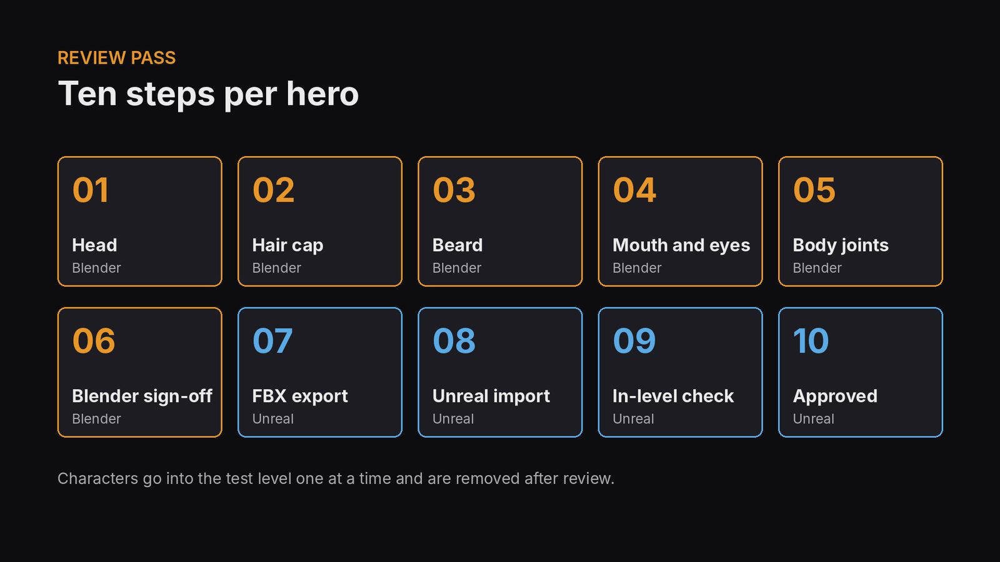
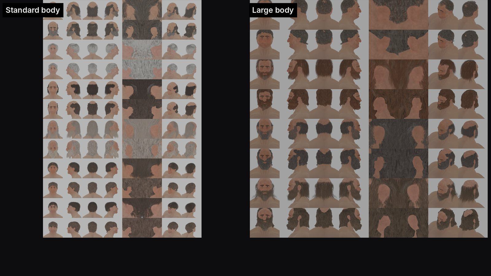
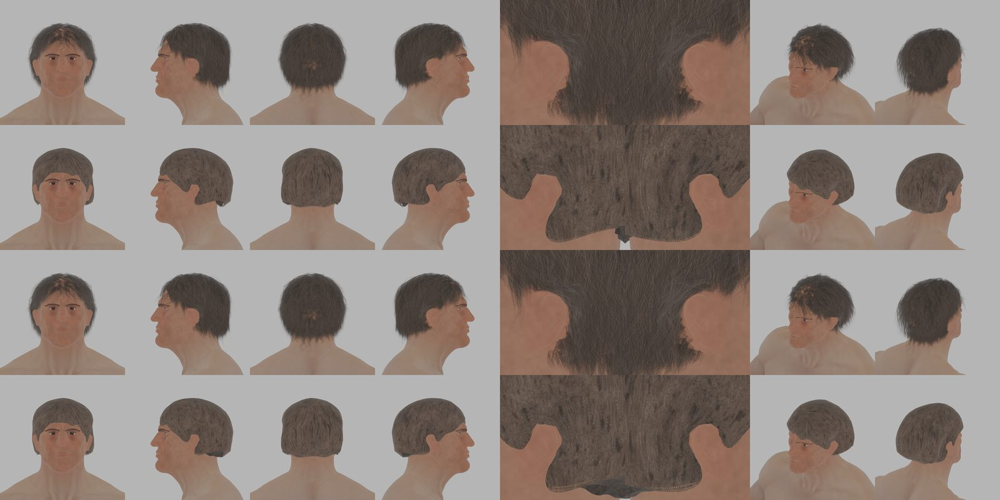
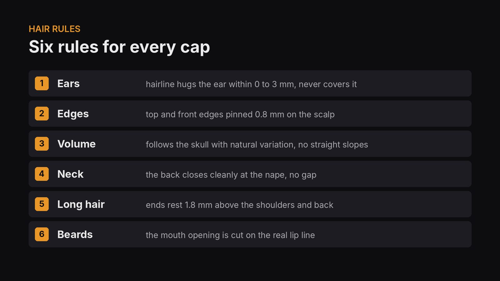

Overview
Bedwyr's hair took 24 versions. The prompt that finally landed was one screenshot with two coloured circles and four plain sentences: what I saw, where I saw it, what it should look like, and why.
Episode 3 goes back through three weeks of KnightZ sessions and pulls out the prompts that made the biggest difference. In that time Claude helped build 16 hero characters with face rigs, imported them all into Unreal, generated hundreds of animation clips, and wrote a screenplay, a combat design and an economy. This page lists the actual prompts, what each one did, why it worked, the four that cost time, and two templates you can copy.
Chapters
Click a chapter to jump the player to that point.
Software and tools
| Tool | Role in this episode |
|---|---|
| Claude (desktop app) | Every session, prompt and review in the episode |
| Claude project docs | Shared memory between sessions: character records, rules, scripts, next-session prompts |
| Claude skills | /newhead, /newfathead, /newhair, rigging and Weight Pose Adjust: one line replaces a page of instructions |
| Blender 5.2 with Blender MCP | Hair caps, skin, rig rebuild |
| Unreal Engine 5.8 with Unreal MCP | Character import, animation review tool, root motion edits |
| HY-Motion | Text-to-motion model that generated the animation clips (four takes per prompt) |
| Git with LFS | Every edit committed from inside the Unreal editor |
| Filmora | Episode edit |
The prompt that fixed Bedwyr's hair
Version 1 of Bedwyr's hair cap came out of an overnight batch. Versions 2 to 23 came from text feedback. Version 24 was approved after this prompt and one marked-up screenshot.


I can see the skull mesh through the hair cap where circled in blue. Your grey streaks run perpendicular to the hair grain where circled in red. The grey streaks should run the same direction as the hair texture so they look like grey hairs. The idea for the grey streaks is to make his hair more grey; it is too brown for an old man with a grey beard.
Why it worked: location (colour-coded circles), problem, desired result and the reason. The reason fixed a problem the circles never showed: the overall colour was too brown.
The session-start prompt: four parts
Every new AI session starts with no memory of yesterday. The first prompt has to carry the context. The best session starts all had the same four parts:
| # | Part | What to include |
|---|---|---|
| 1 | Where the work lives | Engine and version, project path, file and object names. Claude stops guessing which file you mean. |
| 2 | What to read first | The project docs that hold the history. Naming three docs replaces pages of explaining. |
| 3 | Numbered tasks | One fix per item, in order, each with the exact change wanted. |
| 4 | The finish line | Save, commit, update the checklist. Without it you get a different idea of done every time. |
We are reviewing and editing the HY-Motion animation clips in Unreal (KnightZ, UE 5.8.3, project D:/__KSUIE_Gaming/KnightZ_3D/KnightZ_3D). Read these project docs first: SESSION_NOTES_20261012_anim_review.md, ANIM_POSE_RULES_20261012.md, UE_ANIM_REVIEW_tool_20261012.md. 1. Apply the 4 "Needs edit" notes on Guard_Walk: - FL: trim the opening where he walks forward-right; start where he walks forward-left. - R: trim the opening half step left; start where he steps right. - L: keep the animation, scale root motion so the feet stop sliding. - BR: he moves back-left. Tell me the options before changing it. Edit clips in place, keep root motion, check shield clearance, save, commit to git. I think we generated four options for each animation on our first pass, so check whether one of the others is correct. Keep responses brief and factual. No em dashes.
Why it worked: exact path and engine version, docs to read, one numbered fix per clip, safety rules (edit in place, keep root motion), a gate on the one risky item, and a hunch.
The finished clips can be seen in Dev Log #20.
Feedback on visual work
Game development is visual. The AI can measure a mesh, but it cannot see what bothers you unless you say it.
Name a reference and the symptoms
The first look at Owain in Unreal got the feedback "he looks deformed". That gave Claude nothing to measure, so it came back with questions. The second try named a reference and four symptoms:
Compare this to our blender model. He is deformed. At idle he should be standing up straight and look like our blender model that was approved. His bones look like they have been repositioned so his chest is stretched, his back is crooked, he is leaning forward and his toes go into the ground.
Why it worked: "deformed" alone gives nothing to test. "Leaning forward, toes in the ground, compared to the approved model" gives a target and a measurement.

Mark it up
Take a screenshot and circle the problems, one colour per problem. Then add the reason (see the Bedwyr prompt above).
Plain words work
You do not need the technical term. A clear description of the look and the direction of change is enough.
His skin looks like dry leather, reduce the depth of the texture a bit to make it look more natural and less dry and tanned rhino hidish.
Limits, gates and fixed replies
An AI that can run Blender and Unreal can also break them. Four habits keep that in check:
| Habit | Example from KnightZ | Effect |
|---|---|---|
| Hard limits | "Do not export FBX or touch Unreal until all 15 are approved." | One line protects the whole downstream pipeline |
| Non-negotiables | "We definitely want face bones." | All 45 face, skirt and cloak bones survived the skeleton rebuild |
| Gates | "Tell me the options before changing it." | Claude laid out three choices for the back-left walk; one was picked and nothing was lost |
| Fixed reply words | Approve, Edit or Revert | Fifteen characters became a repeatable loop |
For each hero: 1. Open the right blend. Show only body, head, eyes, lashes and the new hair. 2. Show me the review sheet plus the known issue for that hero. 3. Wait for my call: Approve, Edit, or Revert. 4. On Approve: tick the checklist, add a dated note, save, open the next hero. 5. On Edit: change the new hair object only, re-render as a new version, show it, wait again. Rules: - Do not export FBX or touch UE until all 15 are approved, unless I say so.

Please review our notes because I'm pretty sure you suggested a different skeleton than Manny. Review the notes while I pose the session working in blender... figure out why we didn't use a manny skeleton to begin with. But we definitely want face bones so figure that out also.
The night run: decide first, then one word
For the overnight hair cap rebuild, Claude asked its planning questions first: which characters, Blender only or Unreal too, keep the old meshes, triangle budget, how to handle ears. The answers went into a project doc so an interrupted session could resume. Then:
Go
Next morning: 15 new hair caps, each with a review sheet and a known-issues list. Every decision had been made before leaving, so nothing stalled overnight.

Four mistakes I made so you don't have to
| Mistake | What was missing | Cost | Fix now in use |
|---|---|---|---|
| Sent a big character build from my phone | Blender was connected through the desktop app; the phone session could not reach it | Session stalled until reopened on the desktop | Start tool-heavy sessions from the computer that runs the tools |
| A rule with no reason: "never import onto Manny's skeleton" | Nobody wrote down why | A whole session working out the history | Every rule lives in a doc with the reason and the measurement |
| Described a hair underside shape in words | A clear picture of the target shape | Generated version rejected | Asked for a flat plane, sculpted it by hand, had Claude measure the sculpt and turn it into a rule |
| Vague opener: "review the project files and you'll get an idea for the economy" | A specific question | A general summary before the real answer | Ask the direct question first |

We have production of stone, but how are we consuming it? Have we worked out that logic and that structure?

Every session writes the next prompt
The prompts got shorter over time, and better. At the end of every session Claude saves what was learned to the project: character records, scripts and rule docs (over 200 so far). Then it writes the prompt for the next session, ready to paste. The animation prompt above was written that way.
- Session prompt: where, what to read, numbered tasks, finish line.
- Claude does the work and renders review images.
- You review: Approve, Edit or Revert.
- Lessons saved: rules with reasons and measurements.
- Next prompt written into a NEXT_SESSION doc.
- Repeated procedures become skills.
When a procedure repeats, it becomes a skill. The question that started it:
Is it possible to build a subagent that does all of these hair edits we are working on? Do you know how to do that? Would it make sense to do that?
Now a new hairstyle or head starts with one line:
/newhair Wulfstan
Skills in use: /newhead, /newfathead, /newhair, knightz-rig-model and Weight Pose Adjust. Episode 1 shows /newhead and /newhair step by step.
Templates you can copy
We are [task] in [tool + version], project [path]. Read these docs first: [doc 1], [doc 2], [doc 3]. Use [connector / tool] for [what]. Tasks, in order: 1. [Item]: [exact change wanted]. 2. [Item]: [exact change wanted]. 3. [Risky item]: tell me the options before changing it. Rules: - Do not [hard limit] until I say so. - Keep [thing that must survive]. - Back up / version every change. Finish: save, commit, update [checklist / notes], write the next-session prompt. Hunch: [anything you suspect, even if unsure]. Keep responses brief and factual.
[Attach screenshot with circles, one colour per problem.] Blue: [what is wrong there]. Red: [what is wrong there]. It should look like [reference: approved model, reference image, real-world comparison]. The reason: [why you want it].
Checklist before you send
- Did I name the files, paths and versions?
- Did I point to the docs that hold the history?
- Is each fix its own numbered item?
- Did I say what must not happen?
- Did I gate the risky step behind "show me options"?
- For visual issues: did I give a reference and a reason?
- Did I say what "done" means (save, commit, notes)?
Ten rules for effective prompts
| # | Rule | KnightZ example |
|---|---|---|
| 1 | Say where the work lives | "UE 5.8.3, project [path]" |
| 2 | Point to the memory | "Read these project docs first" |
| 3 | Number the tasks | FL / R / L / BR, each with its own instruction |
| 4 | State the finish line | Save, commit, update the checklist |
| 5 | Set hard limits | "Do not export FBX until all 15 are approved" |
| 6 | Gate the risky step | "BR: tell me the options before changing it" |
| 7 | Describe symptoms against a reference | "Leaning forward, toes in the ground, compared to the approved model" |
| 8 | Give the reason | "Too brown for an old man with a grey beard" |
| 9 | Mark it up | Blue for skull showing, red for streak direction |
| 10 | Fix the reply format | Approve / Edit / Revert; "brief, factual, no em dashes" |
Episode talking points
Show the talking points
Cold openThis is Bedwyr's hair. Version 1, built overnight by Claude. Version 24, approved. The fix that finally landed came from one plain-language prompt: what I saw, where I saw it, and why it mattered.
Session startEvery new AI session starts with no memory of yesterday. My best session starts had four parts: where the work lives, what to read first, numbered tasks with one fix per item, and the finish line. Bonus: share your hunch.
Visual feedbackThe AI can measure a mesh, but it can't see what bothers you unless you tell it. Name a reference and the symptoms. Mark it up with one colour per problem. Add the reason. Plain words work.
Limits and gatesHard limits protect the downstream pipeline. Non-negotiables protect what must survive. Gates stop risky changes until you pick an option. Fixed reply words turn review into a loop. Then the night run: answer the planning questions, save them to a doc, and type one word.
MistakesWrong device. A rule with no reason. Describing a shape in words instead of showing it. A vague opener instead of a direct question.
The loopAt the end of every session Claude saves what we learned and writes the next prompt. When a procedure repeats, it becomes a skill.
TemplateWhere it lives, what to read, numbered tasks, hard limits, a gate on the risky step, the finish line, and your hunch. For visual feedback: where, what's wrong, what it should look like, and why.